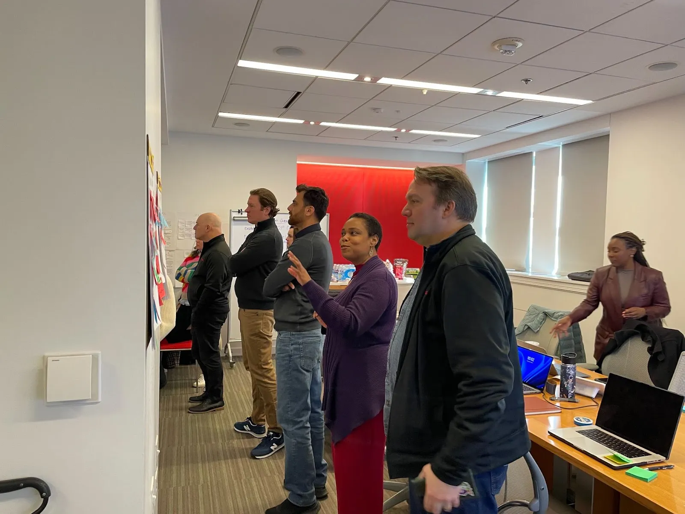

For more than a decade, the Digital IT Acquisition Professional (DITAP) program has helped federal professionals navigate the complexities of modern procurement. Now, as technology and policy shift faster than ever before, the program itself has undergone its most significant evolution yet. Alongside partners like TandemGov and Experience Institute and working closely with U.S. DOGE Service (USDS), vendors, and federal procurement leaders, CivicActions has helped reimagine DITAP to prepare the workforce for the decade ahead.
This fall, the refreshed curriculum launches, bringing a new era of learning to acquisition professionals across government. By January 2026, every delivery provider will transition to this updated model, a model designed not just to keep pace with change but to lead it.
A Modern Learning Model for a Modern Acquisition Landscape
The world DITAP was originally designed for has changed. Cloud-first strategies have matured, new technologies like AI and open-source tools have become essential, and accessibility and plain language are now baseline expectations for federal programs. To meet this moment, DITAP has been modernized from the ground up.
At its core is a new sprint-based structure organized around five modules: Describe, Discover, Design, Build, and Grow. These modules are threaded by a single, realistic case study, creating a coherent learning journey that reduces cognitive load and immerses learners in real-world application. A Technology Bootcamp introduces AI, open-source evaluation, and accessibility practices, while every module is now written in plain language and fully 508 compliant. It is the first time DITAP has been fully accessible from end to end.
“The DITAP Refresh equips acquisition professionals, product managers, and CORs to meet the digital delivery challenges of the decade ahead. It’s a timely investment in the people who shape how government buys and builds technology to deliver vital public services, faster, smarter, and with lasting impact.”
— Mary O’Toole, Digital Services Expert and Federal Acquisition Strategist
Training for the New Procurement Era
The recent Revolutionary FAR Overhaul (RFO) marks the most significant modernization of federal buying in decades, removing outdated rules and transforming how agencies engage with industry. By emphasizing outcomes over compliance, the overhaul fosters faster delivery, broader competition, and more innovative partnerships. It sets the stage for the refreshed DITAP curriculum which equips the acquisition workforce to excel under this new framework.
“I’m excited about the DITAP Refresh because it comes exactly when we need it most, right as we’re implementing the biggest FAR overhaul in 40 years. We’re giving our acquisition professionals the training they need to work with these simplified regulations and deliver faster, better results.
The new DITAP curriculum helps fundamentally change how we buy, as we need training that matches this new reality.”
— Jaime Gracia, Acquisition Leader and Director of The Wolverine Group, Inc.
By developing leaders who can think strategically, collaborate across disciplines, and apply modern practices to real-world challenges, the program strengthens the government’s ability to deliver timely, effective, and citizen-centered solutions. It empowers acquisition professionals to bridge policy and implementation, turning innovative ideas into tangible public outcomes. Through this focus on practical impact, the DITAP Refresh helps build a more responsive, capable, and trusted federal workforce.
“The refresh brings necessary updates to the curriculum. Greater emphasis on systems thinking, practical application of product management principles, and risk management in iterative environments will strengthen learners’ ability to deliver value in complex settings. Adding content that addresses ethical technology use and modular design strategies will give learners a broader context for the decisions they make.”
— Jonathan Mostowski, Acquisition SME and Author of Leading Agile Acquisitions
Targeted Adaptations for Specialized Audiences
One of the most exciting aspects of the refresh is the introduction of two specialized adaptations designed to expand DITAP’s reach and deepen its impact:
- Product Thinking & Acquisitions equips acquisition professionals to apply product management methods in federal contexts, bridging procurement and delivery.
- Strategy for Executive Leaders prepares senior leaders to navigate organizational dynamics and champion digital transformation at scale.
These adaptations move DITAP from a one-size-fits-all model toward a role-specific learning ecosystem. Whether you are shaping policy, leading a portfolio, or delivering technology on the ground, the refreshed program meets you where you are.

Built for Openness
The refreshed DITAP is not just modern, it is built to stay that way. A new open-governance consortium brings together USDS, The Office of Federal Procurement Policy (OFPP), Federal Acquisition Institute (FAI), vendors, and agencies to guide the program’s evolution. This collaborative model ensures that as technology, policy, and mission needs shift, the curriculum keeps pace.
Underpinning this structure is a fully open-source delivery infrastructure. All curriculum materials are hosted on GitHub in SCORM-compatible formats, making them transparent, adaptable, and interoperable across learning management systems. This open foundation reflects CivicActions’ long-standing culture of sharing, openness, and collaboration. By making the curriculum content openly available, the program encourages vendors, agencies, and practitioners to contribute improvements, adapt content to their contexts, and keep the training relevant over time.
Our commitment to openness means that DITAP is not locked inside any single vendor or system. Instead, it is part of a living, collaborative ecosystem that can evolve with the needs of the federal workforce.
The Future of Federal Acquisition Training
DITAP has always been about more than training. It is about enabling a federal workforce that can deliver digital services that meet people’s needs. The refreshed program is practical, future-ready, open, and accessible. It empowers acquisition professionals to lead in a rapidly changing landscape, equips agencies to deliver smarter, and supports vendors with the tools to scale.
This curriculum update represents an investment in the people who shape the government’s digital future. It is built on the principles of openness and shared stewardship that CivicActions champions.
If you’re ready to level up your procurement practice and help shape the future of digital government, learn more about advancing digital acquisition and procurement training through DITAP.